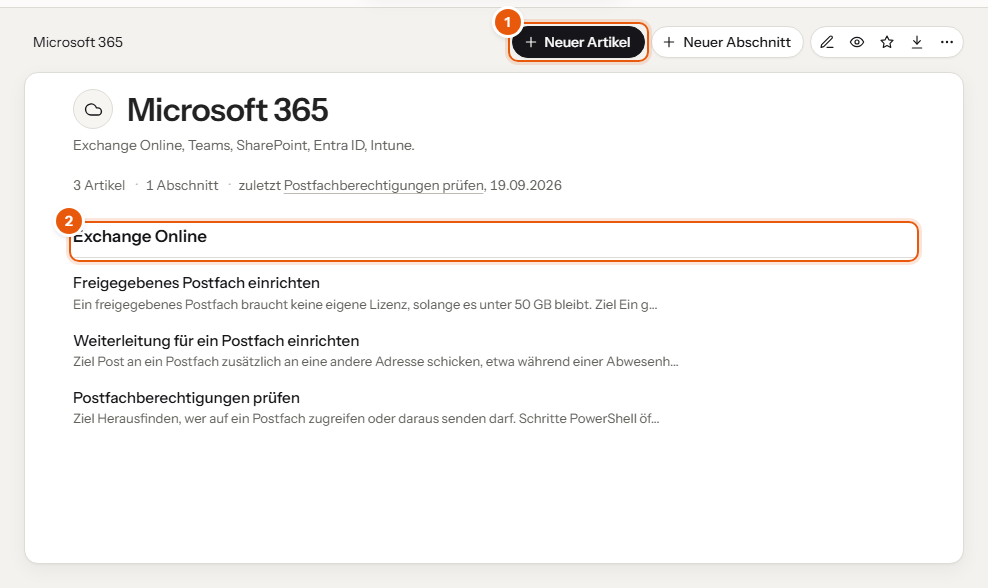

Ein neuer Artikel bekommt automatisch den passenden Aufbau. Du musst nur die vorbereiteten Überschriften ausfüllen.

Dann im Editor:
| Wo | Vorlage | Überschriften |
|---|---|---|
| Anleitungen & Technik, Ausbildung | Anleitung | Ziel · Voraussetzungen · Schritte · Ergebnis prüfen · Fehlerbehebung · Stand und Verantwortlich |
| Prozesse & Richtlinien | Prozess oder Richtlinie | Zweck · Geltungsbereich · Ablauf · Verantwortlich · Gültig ab und Überprüfung |
| Checklisten | Checkliste | Anlass · Punkte · Abschluss |
| Kunden, Abschnitt „Überblick“ | Kundenüberblick | Kurzprofil · Ansprechpartner · Umgebung · Besonderheiten · Verweise · Änderungsprotokoll |
Behalte die Überschriften der Vorlage bei, auch wenn ein Abschnitt kurz bleibt. Dann findet man sich in jedem Artikel gleich zurecht, und Fundus kann die Inhalte sauber zuordnen.
| Problem | Lösung |
|---|---|
| „Neuer Artikel“ fehlt | Du darfst in diesem Thema nicht schreiben. Frag die Redaktion. |
| Keine Vorlage eingesetzt | Das Thema hat keine Standardvorlage. Rechts im Editor unter „Vorlagen“ kannst du eine von Hand einfügen. |